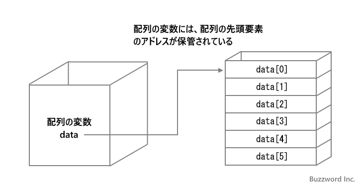

基本のデータ型
Java では基本のデータ型が用意されており、データ型毎に扱えるデータの種類や範囲が決められています。基本データ型には整数や浮動小数点数、文字、論理型があります。ここでは Java で用意されている基本データ型の種類と扱えるデータについて解説します。
基本データ型の種類
Java で用意されている基本データ型は次のものがあります。
| データ型 | 値 |
|---|---|
| boolean | true or false |
| char | 16ビットUnicode文字 \u0000～\uFFFF |
| byte | 8ビット整数 -128～127 |
| short | 16ビット整数 -32,768～32,767 |
| int | 32ビット整数 -2,147,483,648～2,147,483,647 |
| long | 64ビット整数 -9,223,372,036,854,775,808～9,223,372,036,854,775,807 |
| float | 32ビット単精度浮動小数点数 |
| double | 64ビット倍精度浮動小数点数 |
整数を扱うデータ型はいくつかりますが、扱える数値の範囲が異なります。 long 型などより大きな範囲を扱えるデータ型を使用すれば何でも大丈夫なように思えますが、大きな値を扱えるデータ型はコンピュータの資源をより多く必要とします。そのため扱う値に応じた適切なデータ型を使用することが大事です。
それではそれぞれのデータ型についてもう少し細かく確認していきます。
整数のデータ型
整数の値を格納するためのデータ型は格納する数値の大きさに合わせて 4 種類用意されています。
byte -128 ～ 127 short -32,768 ～ 32,767 int -2,147,483,648 ～ 2,147,483,647 long -9,223,372,036,854,775,808 ～ 9,223,372,036,854,775,807
※char型も整数のデータ型と考えることもできます。char型については後で解説します。
byte 型や short 型はかなり扱える範囲が狭く、また小さい数値の場合でも int 型を使用した方が処理が高速に行えることから整数を扱う場合は基本的に int 型を利用します。 int 型では扱えないきわめて大きな数値を扱うことが分かっている場合に long 型を使います。
「数値リテラルにサフィックスを付けて型を指定する」で解説した通り、 78 とか 156 などのように整数を記述した場合は int 型の値として扱われます。よって int 型の変数に値を代入する場合はそのまま記述できます。
int num; num = 156;
long 型の変数に数値を代入する場合、 int 型の範囲内の値であればそのまま記述できます(自動的に型変換が行えます)。
long num; num = 156;
int 型の範囲を超える整数リテラルを記述する場合は末尾に「L」または「l」を記述することで long 型の値として扱われます。 long 型の変数に int 型の範囲を超える数値を代入する場合は末尾に「L」を記述してください。
long num; num = 39433204432234523L;
byte 型や short 型の変数に数値を代入する場合、それぞれのデータ型の扱える範囲の数値であればそのまま記述できます。
byte num; num = 10;
※ キャスト演算子を使わないで byte 型や short 型に int 型の値を代入できるのは数値リテラルを代入する場合だけです。詳しくは「数値リテラルを代入する場合の自動変換」を参照されてください。
浮動小数点数のデータ型
浮動小数点数の値を格納するためのデータ型は格納する数値の大きさに合わせて 2 種類用意されています。
float 32ビット単精度浮動小数点数 負の値は -3.4028235E+38 ～ -1.401298E-45 正の値は 1.401298E-45 ～ 3.4028235E+38 double 64ビット倍精度浮動小数点数 府の値は -1.79769313486231570E+308 ～ -4.94065645841246544E-324 正の値は 4.94065645841246544E-324 ～ 1.79769313486231570E+308
「数値リテラルにサフィックスを付けて型を指定する」で解説した通り、 3.2 とか 5.23e3 などのように浮動小数点数を記述した場合は double 型の値として扱われます。よって double 型の変数に値を代入する場合はそのまま記述できます。
double num; num = 7.8;
float 型の変数に数値を代入する場合、それぞれのデータ型の扱える範囲の数値であってもそのまま記述するとエラーとなります。その為、 float 型の値に浮動小数点数リテラルを記述する場合は末尾に「F」を付けてください。 float 型の値として扱われます。
float num; num = 7.8F;
文字のデータ型
一つの文字を格納するためのデータ型として char 型が用意されています。
char 16ビットUnicode文字 \u0000～\uFFFF
Unicode で定義されている文字が格納できます。 char 型の変数に文字を代入する場合は 'a' や '花' などのようにシングルクオーテーションで囲んで文字リテラルとして代入したり文字コードを使って '\uxxxx' のように代入します。(詳しくは「文字リテラルと文字コード」を参照されてください)。
char c; c = 'a'; c = '\uxxxx';
なお一つの文字を格納するために使われる char 型ですが実際には文字コードである数値を格納します。その為、16ビットの符号が無い整数を格納するためのデータ型と考えることができます。
char 0 ～ 65635
ただし char 型は文字を格納するのが目的のデータ型なので、整数を格納するのが目的で使用するのはするべきではありません。
論理型のデータ型
true または false の論理値リテラルを格納するためのデータ型として boolean 型が用意されています。
boolean true or false
論理演算の結果として true または false が返されるため、その値を格納するために使用されます。
基本型と参照型
Java のデータ型にはここまで解説した基本型とは別に参照型と呼ばれるデータ型があります。参照型のデータ型には配列やクラス、文字列を扱う String 型などが基本型ではないデータ型はすべて参照型となります。
基本型の変数には値そのものが格納されるのに対して、参照型の変数には配列の本体やクラスのインスタンスが保管されている場所を表すアドレスが格納されます。

参照型について詳しくは配列やクラスのページで解説します。
それでは簡単なサンプルプログラムを作って試してみます。テキストエディタで次のように記述したあと、 JSample4-1.java という名前で保存します。
class JSample4_1{
public static void main(String[] args){
int n = 100;
long l = 12345678910L;
double d = 3.14;
float f = 3.14F;
char c = '花';
boolean b = true;
System.out.println("n=" + n);
System.out.println("l=" + l);
System.out.println("d=" + d);
System.out.println("f=" + f);
System.out.println("c=" + c);
System.out.println("b=" + b);
}
}
コンパイルを行います。
javac -encoding UTF-8 JSample4_1.java
その後で、次のように実行してください。
java JSample4_1
それぞれデータ型が異なる変数を 6 つ宣言すると同時に値を代入し、そのあとでそれぞれに変数に格納された値を画面に出力しました。
-- --
Java で用意されている基本データ型の種類と扱えるデータについて解説しました。
( Written by Tatsuo Ikura )

著者 / TATSUO IKURA
初心者～中級者の方を対象としたプログラミング方法や開発環境の構築の解説を行うサイトの運営を行っています。